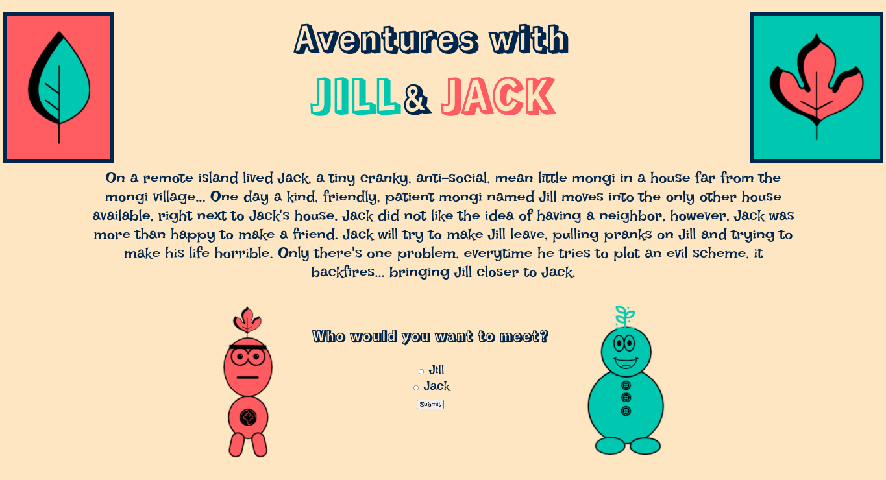

In SEP we had to make a "Movie Webpage" which is similar to a trailer and we make it with a partner. We had to make up a plot and characters and decide would it would be like fiction or nonfiction.
Our plot was that there is 2 cartoon made neighbors 1 is bad and the other is good. The bad neighbors wants to get of the good neighbors because he dosen't like him so he trys to get rid of him by pulling pranks on him till he will leave but the pranks backfire. We also made our own characters on logomakr.
The most challenging obstacle in the project was coming up with the plot and how the character would look like. This seems so simple but it is ahrd because there so many things you can chose from. It took more than a day to come up with the plot.
During the project I learned many skills. For example communication and debugging were part of the project. Communication was key because we had to comminicate a lot to express or ideas and opinions. Debuggin is important because there were a lot of mistakes in the code that were hard to find but with a little but of pattience and effort it was no problem
Preview of the project
behind the scenes of project
